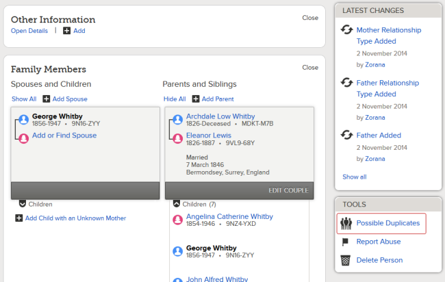

Resolve Duplicates
When you resolve duplicates, you help avoid duplicate temple work and research confusion.
This topic explains how to do the following:
- Check for duplicates using Possible Duplicates
- Check for duplicates using Find
- Merge duplicates
In Family Tree, a record is considered a duplicate if it represents the same person as another record in Family Tree.
The information in Family Tree came from many different sources—for example, extracted records, temple records, LDS Church membership records, and user submissions. As a result, you may find duplicate records, particularly if you are working on lines with early members of the Church (1830 - 1920).
Duplicate records can cause confusion in research as well as duplicate temple work. Fortunately, Family Tree provides the tools needed to resolve duplicate records.
Check for Duplicates Using Possible Duplicates
When you use the Possible Duplicates function on the Person page, FamilySearch looks for records which are similar to the one you are viewing—for example, with the same birth date, birthplace, and parents.
- In the Tools box on the lower right side of the Person page, click Possible Duplicates.

- If Family Tree finds a record that is probably a duplicate, click Review Merge to compare the records more closely.
- If you decide the records represent the same person, follow the instructions below in Merge Duplicates.
- If Family Tree finds a record that is clearly not a duplicate, click Not a Match.
Check for Duplicates Using Find
The Possible Duplicates link on the Person page doesn’t always find duplicates that are in Family Tree. For instance, if two records represent the same person but don’t have a lot of similar information, Family Tree may not consider them duplicates. You can use Find to search for duplicates that aren’t found by Possible Duplicates.
Here's an example. If we click Possible Duplicates on the Person page for Archie Charles Whitby, one match is found.
But watch what happens when a search is done using the Find function.
- Click Find on the menu bar.
-
Enter basic information about the person you’re searching for, and then click Find.
As we would expect, Find found our original record and possible duplicate. However, it also found two other likely matches with slightly misspelled last names.
The key when using Find is to try various searches. For example:
- With a birth parish, town, or city and without.
- With a spouse and without.
- With parents and without.
If you find a record that was not found by Possible Duplicates, make a note of the Person ID and then follow the steps below to merge the two records. In step x, use the Merge by ID tab rather than the Possible Duplicates tab.
Merge Duplicates
When you are certain that two records represent the same person, you can merge them. Remember, the goal of Family Tree is to have one accurate record per person.
- Go to the Person page of one of the duplicate records you want to merge.
- Click Possible Duplicates.
- If you see the duplicate record you want to merge, click Review Merge.
-OR-
If you don't see the record but you have a Person ID (PID), click Merge by ID, enter the PID, and click Continue.
The Merge Persons page appears, displaying the information for the two duplicates side by side. Information on the left will be kept when the merge is completed; information on the right will be deleted.
- Carefully compare each item of information for the two individuals:
- If the information on the right is the same as the information on the left, or if it is less complete, you don't need to do anything.
- If the information on the right is more correct than the information on the left, click Replace.
- If information on the right doesn't appear on the left but you want to keep it, click Add.
- After reviewing all information on the page, click Continue.
- Review the information a final time. If you are satisfied that everything is correct, complete the Reason This Merge Is Correct box with an explanation of why you believe the two records represent the same person. Example: Mary Entwistle M3DD-1QQ and Mary Entwistle KVTF-1BJ were christened on the same date in the same location and have the same parents.
- Click Finish Merge.